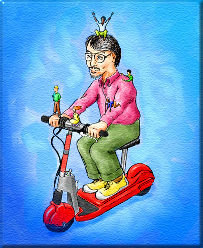

Choose your installed game folder, then press Play.
Last 15 seconds; collection continues while hidden. *Next frame after input is an estimate of response time. GPU/display latency is not measured.
Click the game to use your mouse and keyboard. On touch screens, use one finger for left click and hold two fingers for right click.
You need to own a copy of The Sims: Complete Collection v1.91 to run this port. This project aims to provide support and interoperability for the original The Sims: Complete Collection, which is abandonware and cannot be redeemed or exchanged for a new copy.
Game files are read locally on your device and are not uploaded. The first launch prepares your game in the browser (x86 → WebAssembly transpilation).
The Sims: Legacy Collection is not supported. To purchase the current release, buy on Steam from EA.
This is a progressive web app. On supported devices, you can install it and open it from your home screen.
Source code: GitHub.
The Sims, Maxis, EA, and the original artwork and audio belong to Electronic Arts and their respective owners. This project is not affiliated with or endorsed by Electronic Arts. You must legally own the game to use this project.
Back up or restore all saved households, neighborhoods, and preferences.
You still need your original game files to play after importing a backup.
Importing replaces all saved households, neighborhoods, and preferences in this browser. Export a backup first if you want to keep your current progress.
This permanently deletes all saved households, neighborhoods, and preferences for this site in this browser. This cannot be undone.
Your original game folder stays unchanged. The next game starts from that folder.
